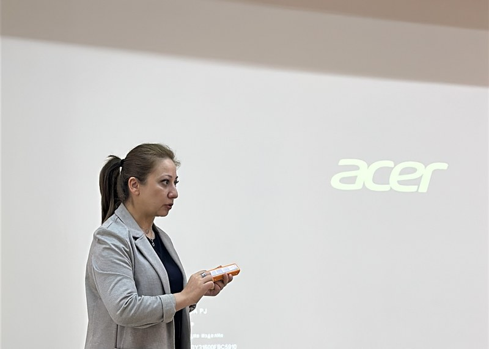
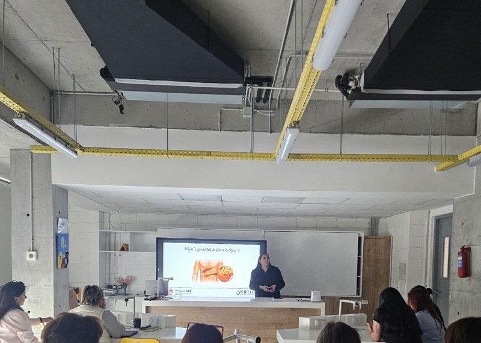
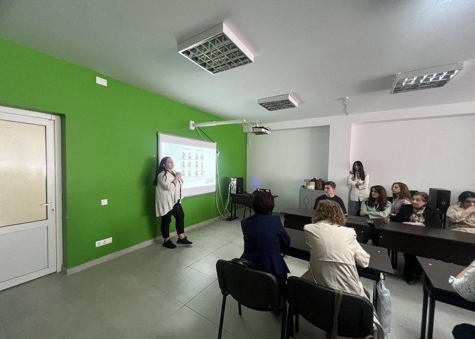
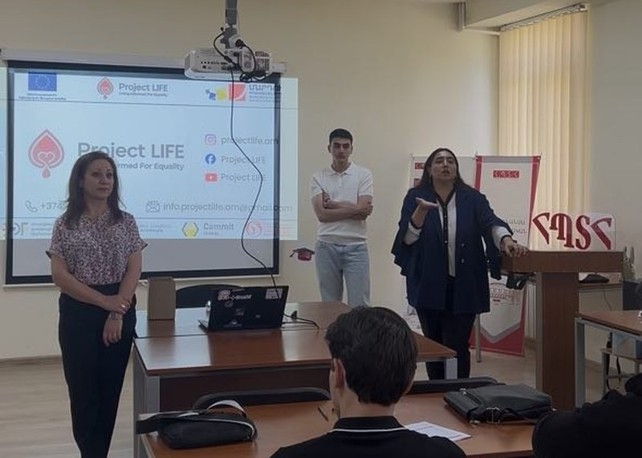
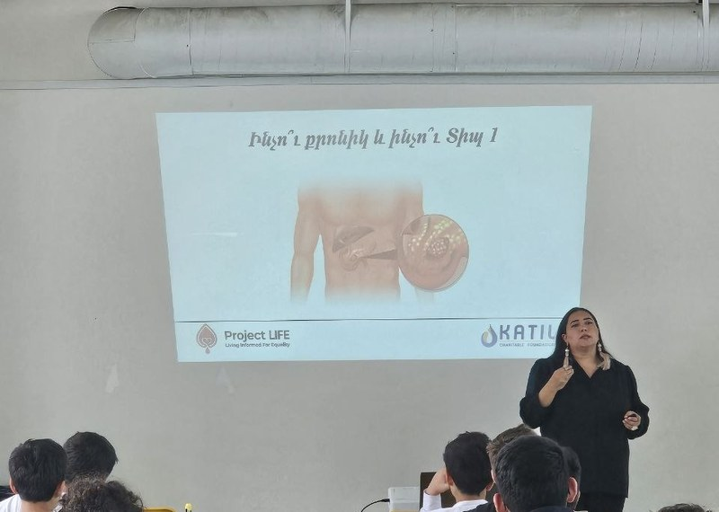
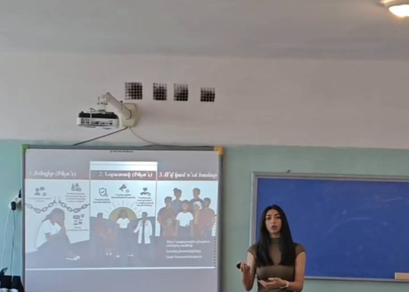
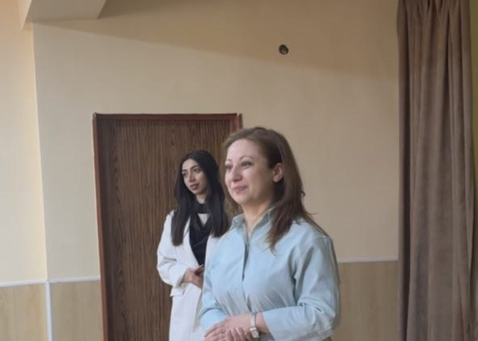
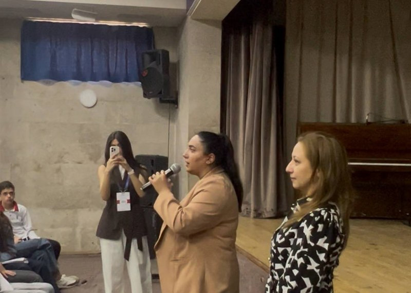
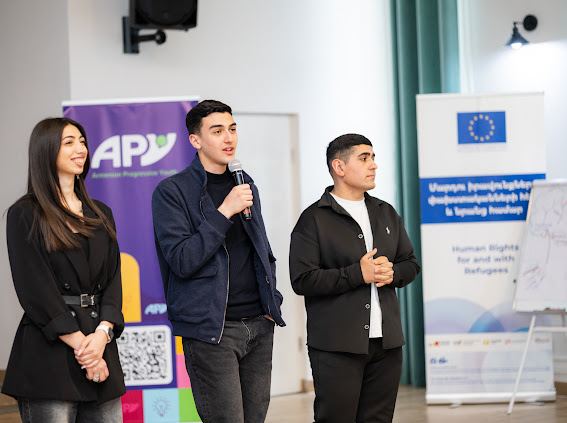
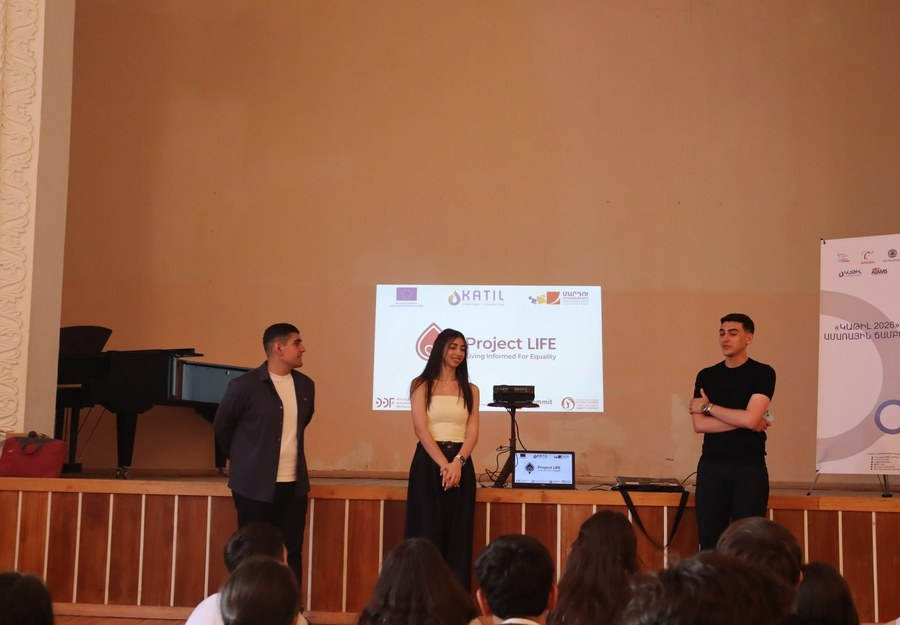

Տեղեկատվություն
Հավաստի կրթական ռեսուրսներ դիաբետով ապրող անձանց համար։
Տեղեկատվություն • Իրավունքներ • Համայնք • Աջակցություն
Մեր առաքելությունը
Project LIFE նախաձեռնության հիմնական նպատակն է պաշտպանել շաքարային դիաբետով ապրող անձանց իրավունքները՝ հատկապես Լեռնային Ղարաբաղից տեղահանվածների շրջանում, և նպաստել նրանց առողջական ու սոցիալական պայմանների բարելավմանը։ Նախաձեռնությունը բարձրացնում է իրազեկվածությունը առողջապահական, սոցիալական և իրավական իրավունքների վերաբերյալ՝ խթանելով հավասար հասանելիություն բուժօգնությանը, դեղորայքին և պետական աջակցության ծրագրերին։

Չորս սկզբունք, որոնց վրա հիմնված է մեր աշխատանքը
Հավաստի կրթական ռեսուրսներ դիաբետով ապրող անձանց համար։
Իրազեկում առողջապահական և սոցիալական իրավունքների մասին։
Կապակցված և տեղեկացված համայնքի ստեղծում։
Մասնագիտական ուղղորդում, գործիքներ և օգնություն։
Նախաձեռնության շրջանակում իրականացվում են բազմազան ծրագրեր՝ առկա խնդիրների համակարգային լուծման նպատակով։
Թրեյնինգներ դպրոցների ու քոլեջների աշխատակազմերի համար, ինչպես նաև հանդիպումներ բժիշկների և իրավաբանների հետ։
Իրազեկման տեսանյութեր և ինտերակտիվ բովանդակություն՝ ուղղված լայն լսարանին։
Անհատական իրավաբանական և առողջապահական աջակցություն որակավորված մասնագետներից։
Դիաբետով ապրող անձանց աջակցող համայնք՝ առկա և հեռակա ձևաչափով։
Անհատականացված թևնոցներ՝ շահառուի կենսական բժշկական տվյալներով, արագ կողմնորոշման համար։
Գլյուկոզի օրագիր, հացային միավորների հաշվիչ և հետադարձ կապի ծառայություն։
2026թ. մայիսին Project LIFE-ի թիմն անցկացրել է իրազեկման թրեյնինգներ 8 ուսումնական հաստատությունում՝ ընդհանուր շուրջ 588 մասնակցի հետ։

50 մասնակից

12 մասնակից

29 մասնակից

35 մասնակից

95 մասնակից

36 մասնակից

50 մասնակից

281 մասնակից

45 մասնակից

45 մասնակից